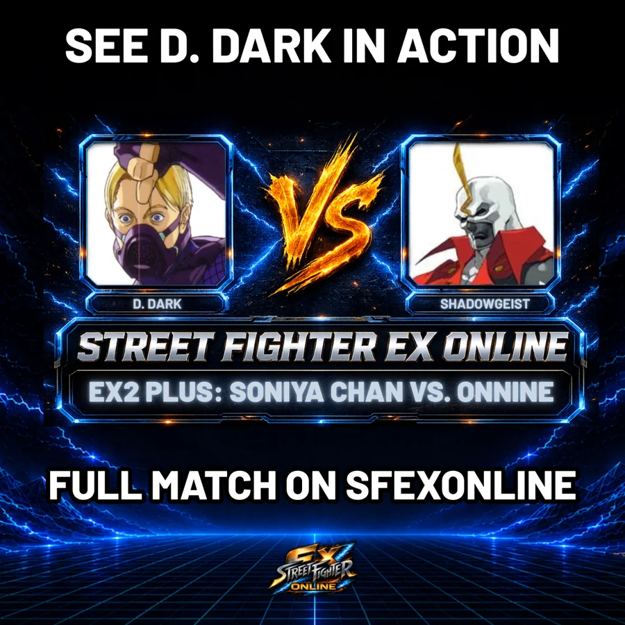

← ALL EX FIGHTER GUIDES
EX FIGHTER GUIDE #4 • EX2 PLUS
D. Dark
D. Dark turns knockdowns into minefields.
He can turn one knockdown into layers of Wire pressure, delayed explosives and another guess before the opponent gets comfortable.
01SEE D. DARK IN MOTION
SHORT GAMEPLAY EXAMPLE

02 • CHARACTER GUIDE
WHY PLAY D. DARK?
BEST FOR: Players who like making the opponent scared to press anything.
- Delayed explosives force hesitation
- Wire opens up nasty follow-ups
- Strong oki turns knockdowns into another guess

▶03 • FEATURED MATCH
WATCH D. DARK IN A REAL SET.
Soniya Chan vs OnNineEX veteran Soniya Chan brings D. Dark’s traps and Wire pressure against OnNine’s aggressive Shadowgeist in a tight two-set battle. Both keep finding answers. A must-see set.